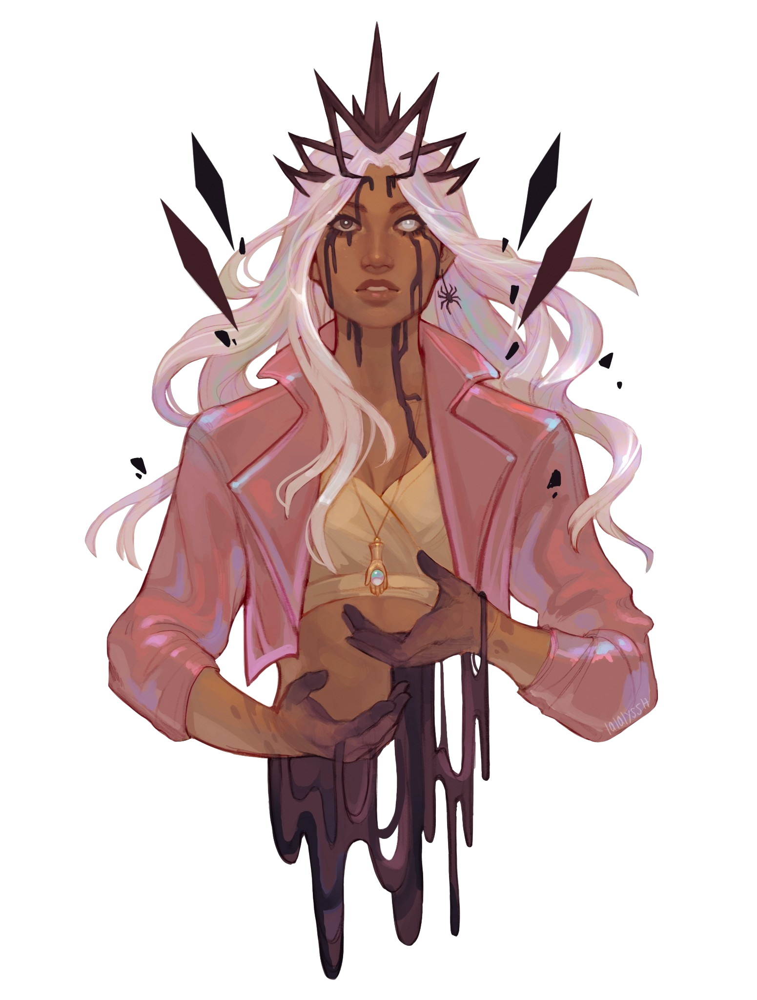

 Art By: @lalalyssh
After a successful heist, the Crown Keepers and Morrighan escape with brumestone. They flee north to Wildwood Valley, pursued by Poska and Fy’ra Kai, carrying a small cache of brumestone. While in hiding, rumors of the Apogee Solstice and Ruidus trapped over Marquet reach them, disrupting magic like Sending, teleportation, and resurrection. Concerned gods and the Observer’s curiosity intensify. Dorian Storm receives a message from Orym to find Keyleth, prompting their journey towards Zephrah in the Summit Peaks. Opal, burdened by the Circlet of Barbed Vision and Vestige of Divergence, was suffering from lack of sleep and exhaustion. Suddenly, she stopped, seemingly growing larger and hearing the Spider Queen command her to sever ties with the Crown Keepers. Despite Opal’s protests via telepathy, she attacked her companions under the Queen’s control. In the chaos, Morrighan and Dorian tried to intervene while Fy’ra Rai attempted to remove the crown. Spiders appeared, causing further turmoil as memories and visions were manipulated or lost. The struggle culminated in tragic consequences, including Cyrus’s death and Morrighan’s departure with his spirit. Opal and Fy’ra Rai negotiated a tentative alliance with the Spider Queen, while Dorian and Dariax journeyed towards Zephrah, driven by vengeance and seeking answers.
The characters are:
Dariax Zaveon
Dariax Zaveon, a dwarven sorcerer/bard and member of the Crown Keepers, grew up in Turst Fields alongside his older brother, Taros. While Taros followed the family farm path, Dariax was a troublemaker, often causing literal and figurative fires that Taros had to put out. Despite their differences, they maintained a decent relationship. Dariax has dabbled in thieves’ circles and once claimed a relationship with a burlesque dancer, Tharla Starr, though this was later revealed to be false. He also had a passionate but tumultuous relationship with Deni$e Bembachula, which ended when he left her to deal with the fallout of some shady business they were involved in. It was during this time, in 842 PD, that Dariax joined the Crown Keepers.
Dorian Storm
Dorian Storm, originally born as Brontë Wyvernwind, is an air genasi bard and member of both the Crown Keepers and Bells Hells. Born into the wealthy and prominent Wyvernwind family, Dorian lived a sheltered life among the tents of the Silken Squall. Despite his privileged upbringing, he felt constrained by his family’s expectations, particularly their use of Zone of Truth to extract confessions from him when caught lying. Around 842 PD, Dorian left home, adopting the name Dorian Storm and embarking on travels that took him to Marquet and Emon, where he pursued music gigs.
After the events with the Crown Keepers, Dorian returned to Byroden and joined Orym and Fearne in investigating the source of the attack on Zephrah, under the guidance of Keyleth. They journeyed to Jrusar via Transport via Plants, setting out on a mission that would lead them to further adventures as part of Bells Hells. Eventually, Dorian left the Bells Hells to assist his brother Cyrus in paying off his bounty.
Fy’ra Rai
Fy’ra Rai, a fire genasi monk, hails from the Elemental Plane of Fire and was raised by strict parents alongside her twin sister, Fy’ra Kai. Despite their competitive relationship, Fy’ra Rai harbored guilt over an incident where her sister fell, leading to her own injury. Both siblings eventually left home separately, and Fy’ra Rai believed her sister had perished, blaming herself for not protecting her.
Venturing alone, Fy’ra Rai crossed paths with Dariax, Dorian, Fearne, Opal, and Orym near Emon in 842 PD, embarking on adventures together. During a perilous encounter in the Feywild, Fy’ra sacrificed herself to ensure her friends’ safety, later returning to Exandria with newfound abilities granted by Melora, including “The Gift,” enhancing her intuition.
Morrighan Ferus
Morrighan Ferus, a lagomore paladin and former bartender, spent much of her life in Kymal, navigating the city’s underworld by working at casinos and executing heists. Feeling the weight of her existence in Kymal, she joined forces with the Crown Keepers for a lucrative heist at The Maiden’s Wish. During the mission, she experienced a profound connection to a mysterious bas-relief, guided by an inner birdsong that led her to destroy the artifact with the help of her companions. As they escaped with their spoils, a single raven seemed to affirm Morrighan’s actions, hinting at a greater destiny yet to unfold.
Opal
Opal, a human warlock and member of the Crown Keepers, hailed from Byroden, born in 824 PD. Raised with her twin sister Ted by their father after their mother’s departure, Opal left home at 18, eventually arriving in Emon in 842 PD.
Throughout her adventures, Opal grappled with the loss of her magical abilities and her complex relationship with her sister Ted. Facing various challenges, including confrontations with mysterious foes, Opal ultimately triumphed in a climactic battle to save Ted, but not without consequences—the Circlet of Barbed Vision became fused to her skin, leaving a lasting mark on her journey.
# Pre-Initiative
add_damage('Opal', 'Force', 31)
# Eldritch Blast 2/3
update_damage_taken("Fy'ra", 31)
# Round 1
add_damage('Morrighan', 'Piercing', 27)
add_damage("Fy'ra", 'Bludgeoning', 7)
update_damage_taken('Opal', 7)
add_enemy_damage('Ted', 'Piercing', 14)
update_damage_taken('Morrighan', 14)
update_damage_taken('Dariax', 2)
# Round 2
update_damage_taken('Morrighan', 5)
update_healing('Morrighan', 31)
# Lay on Hands on Fy'ra Rai
add_damage('Opal', 'Force', 28)
# Eldritch Blast 3/3
add_damage('Opal', 'Necrotic', 10)
# Baneful Scion
update_healing('Opal', 10)
# Baneful Scion on herself
update_damage_taken('Dariax', 38)
add_enemy_damage('Ted', 'Piercing', 9)
update_damage_taken('Dorian', 9)# Round 1
update_damage_taken('Morrighan', 14)
update_damage_taken('Dariax', 14)
update_damage_taken('Dorian', 14)
add_damage('Morrighan', 'Piercing', 8)
add_enemy_damage('Spiders', 'Poison', 15)
update_damage_taken('Morrighan', 15)
add_damage('Morrighan', 'Piercing', 8)
add_damage('Morrighan', 'Radiant', 7)
# Divine Smite
add_damage('Dorian', 'Thunder', 34)
# Chromatic Orb
add_enemy_damage('Ted', 'Slashing', 44)
update_damage_taken('Morrighan', 44)
update_healing('Dariax', 69)
# Mass Cure Wounds on everyone except Fy'ra Rai
add_enemy_damage('Spiders', 'Piercing', 25)
update_damage_taken('Morrighan', 14)
update_damage_taken("Fy'ra", 11)
# Round 2
add_damage('Morrighan', 'Piercing', 15)
add_damage('Morrighan', 'Radiant', 15)
# Divine Smite
increment_kills('Morrighan')
# Spider